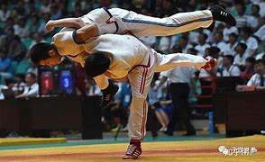
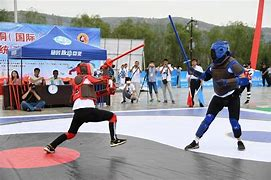
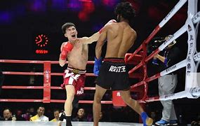

竞技来源
竞技，是以体育为基础，以展示体育成果为目标的社会活动形式。体育，来自于日文中的“体育”一词，出自于19世纪70年代，在中国最早见于20世纪初的清末，由在湖北开办幼稚园、对幼儿进行全面”保全身体之健旺“的教育方 针而来。竞技体育是在西方现代解剖学主导的框架下解释的运动形式，它不能涵盖中国传统武术所包涵对修习者除身体外，在精、气、神等综合方面的提升。中国传统武术并无单一的体育形式，中国也没有传统体育（在2009年 7月9日日，由国家体育总局以体育概念为基础创立的“传统体育”新概念，没法提供任何传统文化引证、及支持。；在2015年3月19日，国家体育总局武术运动管理中心陈国荣副主任，在对中国武术的历史和社会地位等问题、进 行了全面阐述后，重新将武术与体育的关系复原定义：中国武术不仅涵盖了西方体育的多种运动形式，而且，还拥有独特的东方传统运动形式、深邃的思想和厚重的文化。从这个角度来说，中国武术不是隶属于体育，而是体育 的上位概念。中国武术，以中国传统文化为基础的、停止（止）战斗（戈）的技术；是消停战事、维护和平的技术；是物质文明的保障和导向，带领修习者进入认识人与自然、社会客观规律的传统教化方式。
  